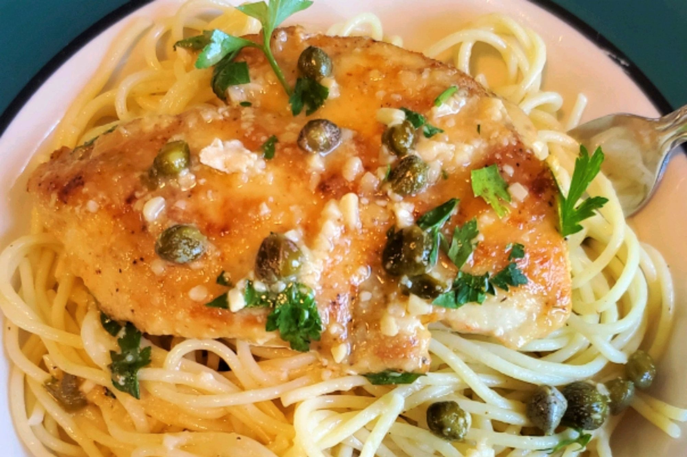

QuickChickenPiccata

These quick and easy pan-fried chicken breasts are topped with a simple pan sauce made with capers, butter, white wine, and lemon juice.
Ingredients
-
4 skinless, boneless chicken breast halves
-
cayenne pepper, or to taste
-
salt and ground black pepper to taste
-
all-purpose flour for dredging
Steps
-
Place chicken breasts between 2 layers of plastic wrap and pound to about 1/2-inch thick.
-
Heat olive oil in a skillet over medium-high heat. Place chicken in the pan, reduce heat to medium, and cook until browned and cooked through, about 5 minutes per side; remove to a plate.
-
Cook capers in reserved oil, smashing them lightly to release brine, until warmed though, about 30 seconds.
-
Pour white wine into skillet. Scrape any browned bits from the bottom of the pan with a wooden spoon. Cook until reduced by half, about 2 minutes.
-
Stir lemon juice, water, and butter into the reduced wine mixture; cook and stir continuously to form a thick sauce, about 2 minutes. Reduce heat to low and stir parsley through the sauce.
-
Return chicken breasts to the pan cook until heated through, 1 to 2 minutes. Serve with sauce spooned over the top.